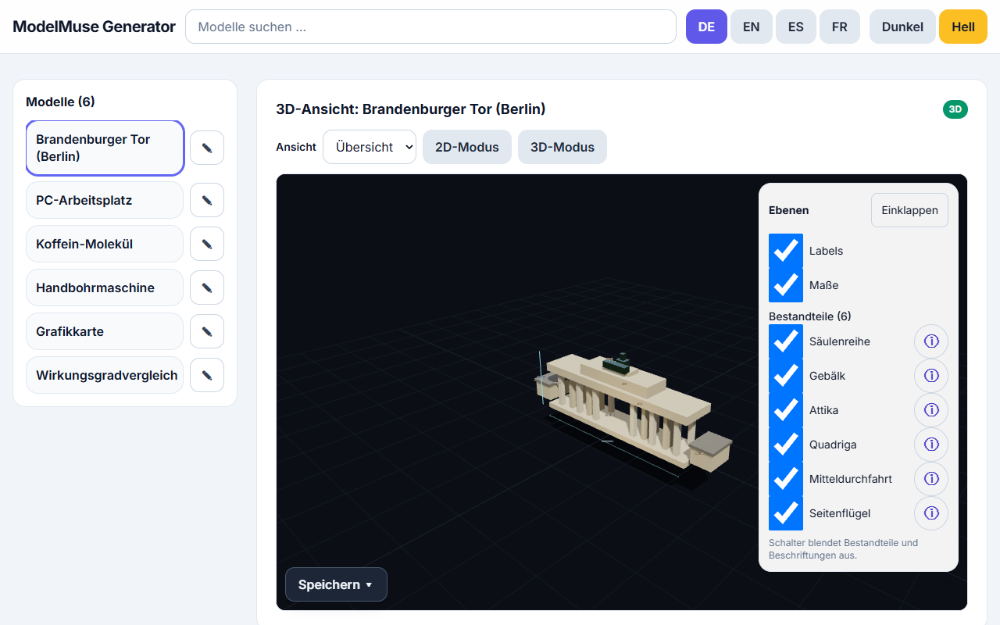

ModelMuse ist eine statische Einzelseiten-App zum Ansehen und Erzeugen von 3D- und 2D-Lehrmodellen direkt im Browser. Es gibt kein Backend und keinen Installationsschritt: Eine einzige HTML-Datei genügt. Voraussetzung ist eine Internetverbindung beim Start (3D-/UI-Bibliotheken und Schrift werden von CDNs geladen; Provider-APIs brauchen Netz).

Die App auf Deutsch: links die Lab-Bibliothek, in der Mitte der 3D-Viewer, rechts Generator und Überarbeiten-Panel.
1. Funktionen im Überblick
6 eingebaute Labs: 5 × 3D (si-1, gpu-example, free-handbohrmaschine, chemie-koffein, arch-brandenburger-tor) plus 1 × 2D-Demo (demo-2d-chart). Jedes Lab erklärt seine Bestandteile dreisprachig (Deutsch, Englisch, Spanisch).
Interaktiver 3D-Viewer: Drehen/Zoomen, Bestandteile ein-/ausblenden, Info-Overlay mit Erklärungen.
2D-Renderer: SVG, Mermaid-Stil, Diagramm, D3-Stil und KaTeX-Stil – Diagrammbegriffe werden automatisch auf die 2D-Darstellung geleitet.
Angedockte Fenster: Generieren, Warteschlange, Überarbeiten und Bauteil-Info erscheinen als stapelbare Overlays und lassen sich minimieren.
Sitzungsbibliothek: Eigene Modelle ansehen, übernehmen, importieren, exportieren und löschen – mit Verlauf (V1 … VX, max. 10 Versionen).
2. Modelle generieren
Anbieter und Modell wählen, ggf. API-Key eintragen (nur Sitzung, siehe § 3).
Beschreibung eingeben (z. B. „Handbohrmaschine, halb aufgeschnitten“) und Generieren drücken.
Während ein Auftrag läuft, können weitere Aufträge eingereicht werden – jeder landet als eigenes Modell in der Bibliothek.
Unter der Modellauswahl zeigt eine live aktualisierte Kosten-/Dauerschätzung aus Telemetrie-Mittelwerten, womit zu rechnen ist.
Eigener OpenRouter-Key (openrouter.ai/keys), nur Sitzung
Datenschutz: Keys leben nur im Speicher oder – mit ausdrücklicher Zustimmung – in sessionStorage. Sie werden nie ins Repository geschrieben; Telemetrie und Diagnosen enthalten niemals Key-Material.
Reasoning-Tiefe:Standard / xhigh / max – max nur dort, wo dokumentiert (1.3/Wonder bei Meta Muse, alle drei OpenRouter-Slugs); xhigh ist Obergrenze für Contributor-Modelle und den Baseten-Pfad. Es werden nie Token-Budget-Parameter gesendet – absichtlich gibt es kein Längenlimit.
4. Warteschlange mit ETA
Generieren und Überarbeiten teilen sich eine Warteschlange. Jeder Anbieter-/Modell-/Reasoning-Kombination ist eine ETA zugeordnet (Standard 60 s, 240 s für schwere Konfigurationen und neue OpenRouter-Modelle). Der Countdown zählt herunter, läuft bei Überschreitung weiter („länger als erwartet · +{s} s“), meldet die Gesamtdauer und bricht nach ETA + 120 s ab.
5. Exportieren
3D-Ansichten: GLB (Beschriftungs-/Messtexte bleiben als userData-Extras erhalten) und PNG-Screenshot der aktuellen Ansicht.
2D-Ansichten: SVG (mit xmlns-Fix) und PNG.
Sitzungsbibliothek: Modellquelle mit Provenienz-Kopf exportieren (ohne Key-Material).
6. Telemetrie (freiwillig) & Diagnose
Nach erfolgreicher Generierung fragt ein Dialog, ob ein Telemetrie-Block geteilt werden soll (Modell, Anbieter, Reasoning, Prompt, Usage-/HTTP-Codes, Dauer – Keys entfernt, nur Speicher, nie persistent). Mit Sternebewertung und Kommentar lässt sich der Block kopieren und per Link-Button als Issue auf GitHub melden. Unabhängig davon kopiert Diagnose kopieren die bereinigte Laufdiagnose (Modus, Reasoning, HTTP-Status, Token-Verbrauch inkl. Reasoning-Tokens, Retry-Flag) – sicher für Bug-Reports.
7. Grenzen
Single File, aber nicht offline: Ohne Netz (CDN/Provider) startet die App nicht – Verbindung prüfen und neu laden.
WebGL2-Pflicht für 3D: Ohne WebGL2 gibt es eine 2D-Ersatzansicht (Teileliste mit Maßen, als automatisch geprüft mit Einschränkung markiert).
Schätzungen sind Schätzungen: Kosten-/Dauerprognosen sind Telemetrie-Mittelwerte, keine Garantie.